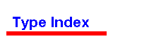

Module cmiAdmin
IDL source Global index
module cmiAdmin

- HeartBeatStruct
- MessageKey
- MessageStruct
- MessageStructSequence

struct HeartBeatStruct {
long pulseInterval;
string requestID;
cmiUtil::DateStruct currentDate;
cmiUtil::TimeStruct currentTime;
};
-
typedef long MessageKey;
-
struct MessageStruct {
cmiUtil::DateTimeStruct timeStamp;
MessageKey messageKey;
MessageKey originalMessageKey;
string sender;
string subject;
boolean replyRequested;
string messageText;
};
-
typedef sequence<MessageStruct> MessageStructSequence;
-
Generated by Sandia idldoc 1.0.